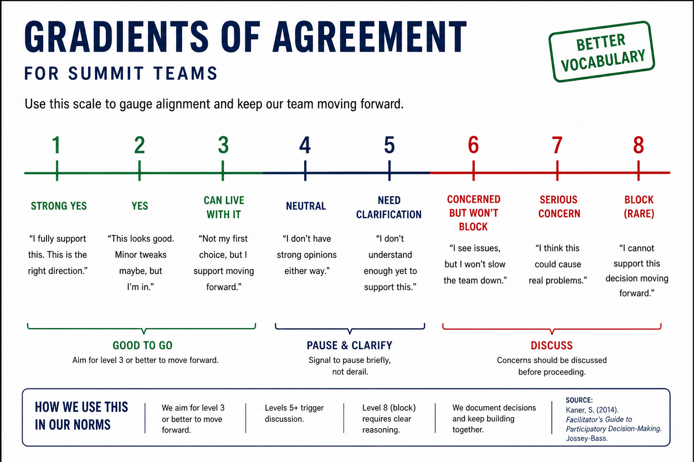
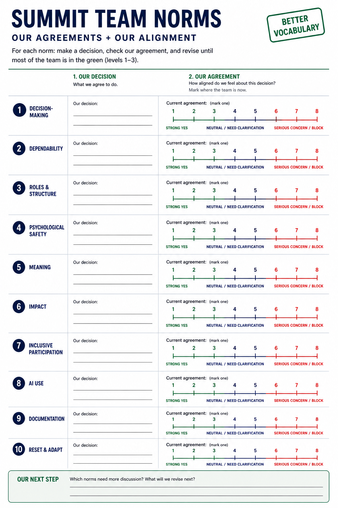

Team Norms

Good teams do not happen by accident. They happen when people make a few shared commitments early, name how they want to work together, and return to those commitments when the work gets busy.
During the Summit, your team will be moving quickly. You will be learning new tools, making choices under uncertainty, working across different backgrounds, and deciding what is good enough to share. Team norms help make that work more dependable, more generous, and more useful.
Why norms matter
Research on effective teams highlights several conditions that help groups work well together: dependability, clear roles and structure, psychological safety, meaning, and impact. For this Summit, we are adding two more: even turn-taking and shared expectations for AI use.
Use these ideas as prompts, not as a script. Your team does not need a long constitution. You need a short set of norms that people can remember, use, and revise.
Create team norms
Time: 10 minutes
Use this quick self-facilitation process with your team.
- Round robin: Everyone shares one norm they think will be important for the team during the Summit. Keep this fast. Aim for one idea per person.
- Collect ideas in GitHub: Make a list with as many possible norms as you can. Do not edit too much yet.
- Vote on your top three: Each person gets three votes. You can put all three votes on one idea or spread them across several ideas.
- Move the voted norms to the top: In GitHub, move all team norms with votes to the top of the list.
Add your selected norms to your project website so the team can return to them during the Summit.

Use this worksheet to record the norms your team chooses and to check how aligned people feel about each decision.
Norms to consider
Your team may want norms around:
- Dependability: How will we follow through on what we say we will do?
- Roles and structure: How will we divide work, keep track of tasks, and know who is doing what?
- Psychological safety: How will we make it safe to ask questions, disagree, try unfinished ideas, and admit when something is not working?
- Meaning: Why does this project matter to the people in the group?
- Impact: Who could use this work, and what would make it valuable beyond the Summit?
- Even turn-taking: How will we make sure everyone has space to contribute?
- AI use: When is it helpful to use AI, when should we slow down, and how will we keep human judgment in the loop?
Example norms
These examples are here to help you get started. Edit them, shorten them, or replace them with your own.
- Be aware that everyone has multiple pressures: personal, professional, financial, and more.
- Communicate clearly with the team, especially when expectations, assumptions, or plans shift.
- Prioritize regular check-ins.
- Listen to and respect everyone's opinion so the team can create knowledge together and find the best path forward.
- Trust the process, even when it is slow.
- Watch tone, avoid judgment, and help create a safe environment.
- Have fun.
- Accept constructive criticism. The goal is to find the best idea, not to defend the first idea.
- Signal when the team is in divergent-thinking mode so people know it is okay to throw out rough, strange, or unfinished ideas.
- Focus on the impact, including translating science, elevating students, empowering collaborators, and creating something useful.
- Contribute to an immersive experience.
- Pick up a pipe cleaner instead of your phone.
- Visit with someone instead of checking email.
- Build community.
- Practice active listening.
- Learn from others.
- Treat teaching and research as forms of learning.
- Grow the network.
- Meet people, participate, and sit with new friends at lunch.
Pro tips
Keep your norms short and sweet. The best norms are easy to remember.
Revisit your norms regularly. If a norm is not working for everyone, change it.
Put your norms at the top of meeting agendas or working notes so they stay visible.
Talk about what the norms mean in practice. For example, what does "respect" look like in this group? What should happen if someone breaks a team norm? How should the team reset if the work starts to feel uneven or rushed?
Decide to decide
Time: 10 minutes
Your team also needs a decision-making norm. How will you decide when there is disagreement, limited time, or more than one reasonable path?
Choose one decision-making technique and add it to your team norms.
Possible approaches include:
- Consensus: Keep talking until everyone can actively support the decision.
- Consent: Move forward unless someone has a serious objection.
- Majority vote: Vote and choose the option with the most support.
- Advice process: One person owns the decision, but they must seek advice from people affected by it and people with relevant expertise.
- Decider protocol: One person proposes a decision, the group gives quick support or objections, and the team resolves objections before moving forward.
- Default experiment: Choose a reasonable next step, try it for a fixed period, then revisit.
For Summit work, consent or a default experiment often works well because teams need to keep moving while still making space for concerns.
Add norms to your team website
Add your selected norms to your team Home page. Keep them short enough that someone can read them during a meeting or share-out.
Suggested format:
## Team Norms
- We will ...
- We will ...
- We will ...
**Decision-making norm:** We will use [chosen method] when the group needs to make a decision.
If your group changes its norms during the Summit, update the website. That is a sign the norms are alive, not that the first version failed.